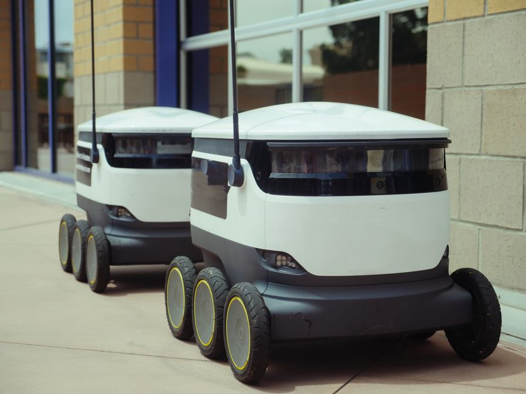

Imagine vast green fields, not just bustling with farmers, but also whirring with intelligent machines. Picture drones gracefully surveying crops, robotic arms delicately picking ripe fruits, and autonomous tractors precisely planting seeds. This isn't science fiction; it's the rapidly unfolding reality of agricultural robotics and farm automation, a revolution set to transform how we feed the world – and particularly relevant for a nation like India, where agriculture is the backbone of our economy. Get ready to explore how robots are cultivating a smarter, more sustainable future for farming!
Why Do We Need Robots in Our Farms?
India's agricultural sector faces unique challenges: a growing population demanding more food, decreasing availability of manual labor, and the ever-present need for sustainable practices to protect our precious natural resources. Traditional farming methods, while time-honored, often struggle with efficiency, resource waste, and the sheer physical demands placed on farmers. This is where agricultural robots, or 'agri-robots,' step in as game-changers.
- Boosting Productivity: Robots can work tirelessly, often faster and more consistently than humans, leading to higher yields.
- Addressing Labor Shortages: With many young people moving to urban areas, finding skilled farm labor is becoming increasingly difficult. Robots can fill this gap.
- Precision and Efficiency: Agri-robots can apply water, fertilizers, and pesticides with pinpoint accuracy, drastically reducing waste and environmental impact.
- Improving Farmer Safety: Robots can handle dangerous tasks like spraying chemicals or operating heavy machinery, keeping farmers out of harm's way.
- Data-Driven Decisions: They collect vast amounts of data, helping farmers make smarter choices about their crops and land.
What Can Agri-Robots Do? A Glimpse into the Future Farm
Precision Planting and Seeding
Gone are the days of scattering seeds by hand. Robots equipped with advanced sensors and GPS can plant seeds at optimal depths and spacing, ensuring each plant has the best chance to grow. This leads to healthier crops and better yields. Some robots can even identify specific soil conditions and adjust planting parameters on the fly!
Automated Weeding and Pest Control
Weeds compete with crops for nutrients and water, and pests can devastate entire harvests. Traditionally, this involves manual labor or widespread chemical spraying. Agri-robots offer a smarter solution:
- Spot Weeding: Robots use computer vision to distinguish weeds from crops and can remove them mechanically, with targeted micro-doses of herbicide, or even with lasers!
- Targeted Spraying: Instead of blanket spraying an entire field, robots can identify infected plants or pest hotspots and apply pesticides only where needed, significantly reducing chemical use.
Harvesting Robots
Harvesting is one of the most labor-intensive and time-sensitive tasks in farming. Robots are now being developed to harvest everything from delicate strawberries and apples to large fields of grains.
"The robotic strawberry picker, for instance, uses advanced vision systems to identify ripe berries and gentle robotic grippers to pick them without bruising, working day and night to maximize yield."
These robots ensure that produce is picked at peak ripeness, reducing waste and improving quality.
Drone Farming: Eyes in the Sky
Drones are revolutionizing how farmers monitor their fields. Equipped with multispectral cameras, they can:
- Assess Crop Health: Identify areas of stress, nutrient deficiencies, or disease long before they are visible to the human eye.
- Monitor Irrigation: Pinpoint areas that need more or less water.
- Map Fields: Create detailed 3D maps of terrain for better planning.
- Pest Detection: Spot early signs of pest infestations.
This aerial perspective provides invaluable data for precision agriculture, allowing farmers to take corrective actions swiftly and efficiently.
The Tech Behind the Green Revolution: How Do They Work?
Agri-robots are complex machines that combine several cutting-edge technologies:
- Artificial Intelligence (AI) & Machine Learning (ML): These are the "brains" that allow robots to interpret data, make decisions, and learn from experience. For example, an AI model can be trained to recognize the difference between a ripe tomato and an unripe one.
- Sensors: Robots are packed with various sensors – cameras (visual, infrared, multispectral), GPS receivers, temperature sensors, soil moisture sensors, and more – acting as their "eyes, ears, and touch."
- Robotics & Actuators: This involves the mechanical design of the robot, including robotic arms, grippers, wheels, tracks, and motors that allow them to move and perform tasks.
- Global Positioning System (GPS) & RTK: High-precision GPS (often combined with Real-Time Kinematic or RTK for centimeter-level accuracy) enables robots and autonomous tractors to navigate fields with incredible precision.
- Internet of Things (IoT): Many agri-robots are connected to the internet, allowing them to share data, receive instructions, and even communicate with other robots in a farm network.
Here's a simplified pseudocode example of how an agri-robot might use computer vision and AI to decide if a fruit is ripe enough to pick:
# Pseudocode for a fruit-picking robot's decision-making process
def analyze_fruit_image(image_data):
# Use a pre-trained Machine Learning model
# The model processes the image to identify characteristics like:
# color (e.g., green, yellow, red), size, texture, blemishes.
# Example: Check if the fruit's dominant color matches 'ripe_color'
# and if its size is above a 'minimum_harvest_size'.
predicted_ripeness = ml_model.predict(image_data)
if predicted_ripeness == "Ripe" and image_data.size > MIN_HARVEST_SIZE:
return True # Fruit is ready for picking
else:
return False # Fruit is not yet ripe or unsuitable
def main_picking_sequence():
while True: # Robot continuously scans the field
camera_feed = get_camera_feed_from_robot_arm()
for object_detected in camera_feed:
if is_fruit(object_detected): # First, confirm it's a fruit
if analyze_fruit_image(object_detected):
print("Ripe fruit detected! Initiating picking sequence...")
move_robotic_arm_to(object_detected.coordinates)
activate_gripper()
store_fruit()
print("Fruit picked and stored.")
else:
print("Fruit not ripe yet. Moving to the next one.")
else:
print("Not a fruit. Scanning next area.")
move_robot_to_next_section_of_field() # Move to scan new plants
# Start the robot's operation
main_picking_sequence()
Challenges and the Future of Agri-Robotics in India
While the potential of agri-robots is immense, especially for a country like India, there are challenges to overcome:
- Cost: Advanced robotics can be expensive, making it difficult for small and medium-sized farmers to adopt.
- Infrastructure: Reliable internet connectivity and electricity are crucial for many autonomous systems, which can be an issue in remote rural areas.
- Skill Gap: Farmers and agricultural workers will need training to operate and maintain these sophisticated machines.
- Adaptation to Diverse Crops: India grows a vast array of crops, and developing robots for each specific type requires significant R&D.
Despite these hurdles, the future is bright. We can expect to see more affordable, modular, and easy-to-use agri-robots. Swarms of small, collaborative robots working together, advanced AI predicting weather patterns and crop diseases with even greater accuracy, and full integration of farm data into smart management systems are all on the horizon. India, with its strong IT sector and agricultural heritage, is uniquely positioned to be a leader in this agricultural transformation.
Conclusion: Cultivating Innovation with MakerWorks
Agricultural robots and farm automation are not just about technology; they are about securing our food future, promoting sustainability, and empowering farmers. From precision planting to drone surveillance and automated harvesting, these intelligent machines are redefining what's possible in agriculture.
At MakerWorks, we believe that the next generation of innovators will be at the forefront of this revolution. If you're fascinated by how robots can make a real difference in the world, then you're already thinking like an agricultural engineer or a robotics scientist!
Ready to be part of this exciting journey? Explore our robotics programs, join a workshop, or start building your own prototypes. Who knows, your next project might just be the solution that helps feed millions! Let's cultivate a future where technology and nature thrive together.